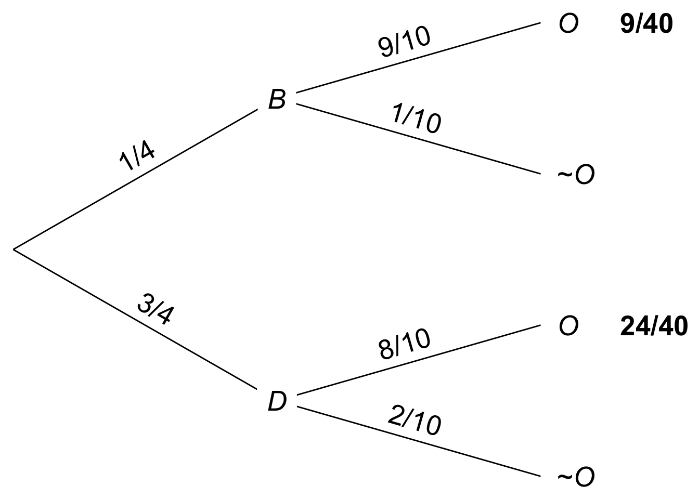
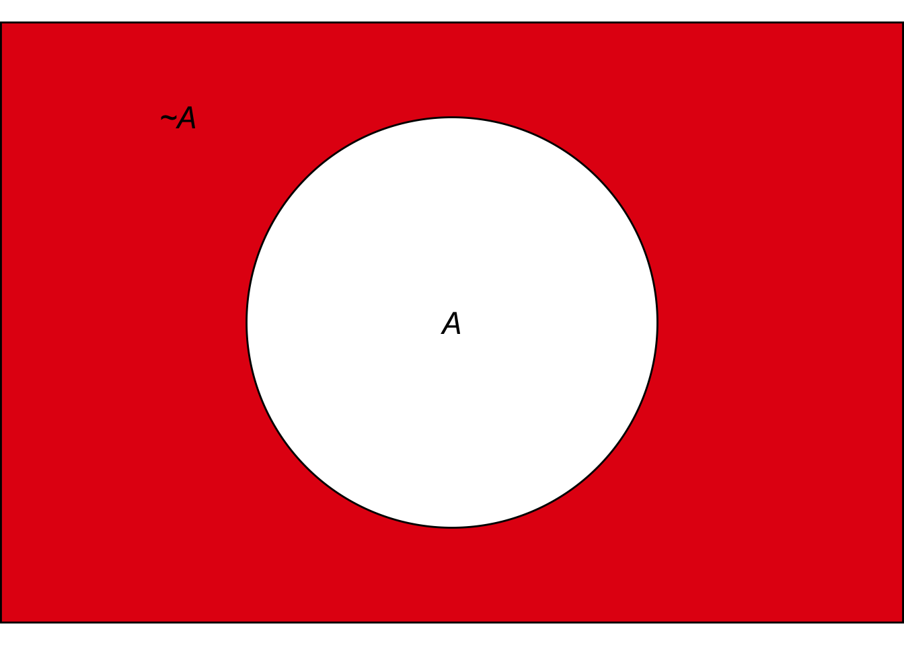
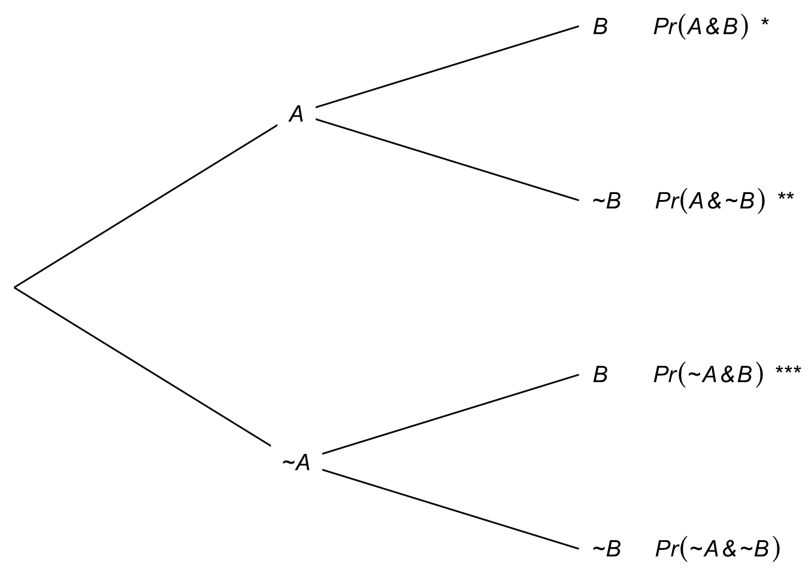
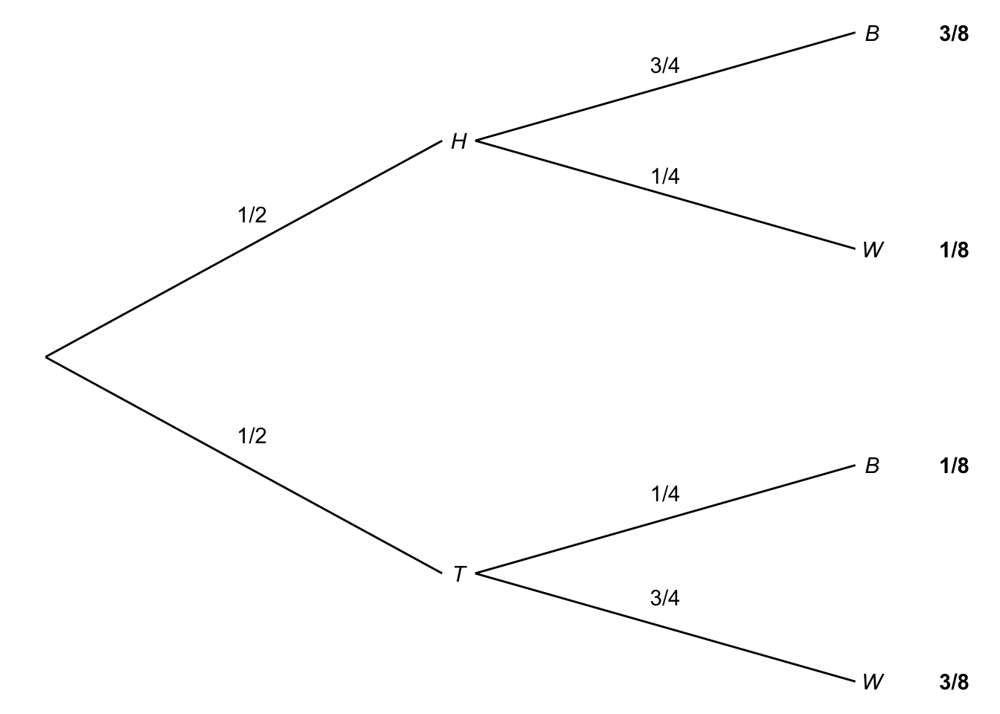
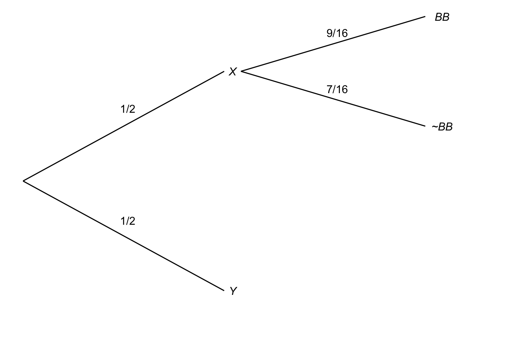
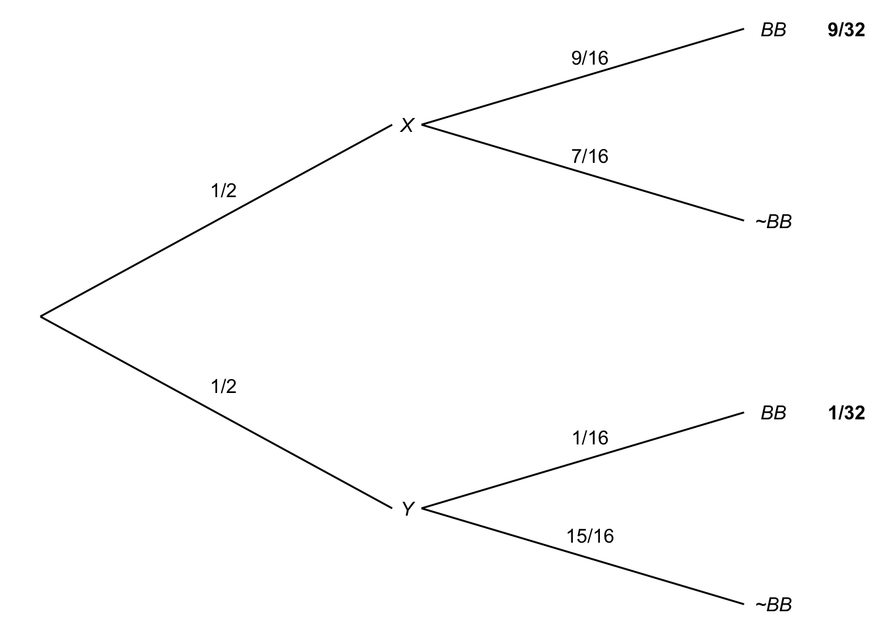
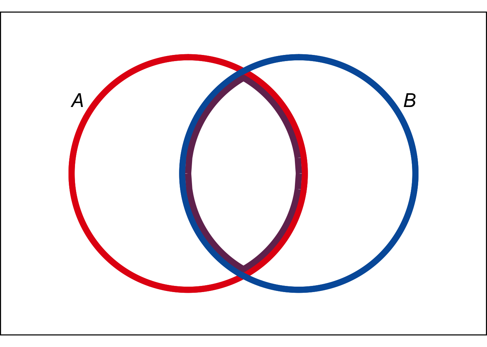

We learned rules for \(\vee\) and for \(\wedge\) back in Chapter 5:
\(\p(A \vee B) = \p(A) + \p(B)\) if \(A\) and \(B\) are mutually exclusive.
\(\p(A \& B) = \p(A) \times \p(B)\) if \(A\) and \(B\) are independent.
In this chapter we’ll learn new, more powerful rules for \(\vee\) and \(\wedge\). But we’ll start with negation, a rule for calculating \(\p(\neg A)\).
 Figure 7.1: The Negation Rule. \(\p(\neg A) = 1 - \p(A)\).
If there’s a 70% chance of rain, then there’s a 30% chance it won’t rain. In symbols, if \(\p(R) = .7\) then \(\p(\neg R) = .3\). So the rule for \(\p(\neg A)\) is:
\(\p(\neg A) = 1 - \p(A)\).
In terms of an Euler diagram, the probability of \(\neg A\) is the size of the red region. So \(\p(\neg A)\) is \(1 - \p(A)\).
It’s important to notice that this rule can be flipped around, to calculate the probability of a positive statement: \[ \p(A) = 1 - \p(\neg A). \] Sometimes we really want to know the probability of \(A\), \(\p(A)\), but it turns out to be much easier to calculate \(\p(\neg A)\) first. Then we use this flipped version of the negation rule to get what we’re after.
The Addition Rule for calculating \(\p(A \vee B)\) depends on \(A\) and \(B\) being mutually exclusive. What if they’re not? Then we can use:
\(\p(A \vee B) = \p(A) + \p(B) - \p(A \wedge B)\).
This rule always applies, whether \(A\) and \(B\) are mutually exclusive or not.
 Figure 7.2: The General Addition Rule in an Euler diagram.
To understand the rule, consider an Euler diagram where \(A\) and \(B\) are not mutually exclusive. In terms of colour, the size of the \(A \vee B\)-region is: \[ \color{bookred}{\blacksquare}\color{black}{} \,+\, \color{bookpurple}{\blacksquare}\color{black}{} \,+\, \color{bookblue}{\blacksquare}\color{black}{}. \] Which is the same as: \[ (\color{bookred}{\blacksquare}\color{black}{} \,+\, \color{bookpurple}{\blacksquare}\color{black}{}) \,+\, (\color{bookblue}{\blacksquare}\color{black}{} \,+\, \color{bookpurple}{\blacksquare}\color{black}{}) \,-\, \color{bookpurple}{\blacksquare}\color{black}{}. \] In algebraic terms this is: \[ \p(A) + \p(B) - \p(A \wedge B).\]
To think of it another way, when we add \(\p(A) + \p(B)\) to get the size of the \(A \vee B\) region, we double-count the \(A \wedge B\) region. So we have to subtract out \(\p(A \wedge B)\) at the end.
What if there is no \(A \wedge B\) region? Then \(\p(A \wedge B) = 0\), so subtracting it at the end has no effect. Then we just have the old Addition Rule: \[ \begin{aligned} \p(A \vee B) &= \p(A) + \p(B) - \p(A \wedge B)\\ &= \p(A) + \p(B) - 0\\ &= \p(A) + \p(B).\\ \end{aligned} \] And this makes sense. If there is no \(A \wedge B\) region, that means \(A\) and \(B\) are mutually exclusive. So the old Addition Rule applies.
That’s why we call the new rule the General Addition Rule. It applies in general, even when \(A\) and \(B\) are not mutually exclusive. And in the special case where they are mutually exclusive, it gives the same result as the Addition Rule we already learned.
A tree diagram also works to explain the General Addition Rule. Consider Figure 7.3, where we start with branches for \(A\) and \(\neg A\), then subdivide into branches for \(B\) and \(\neg B\).
Figure 7.3: Tree diagram with the three \(A \vee B\) leaves marked
There are three leaves where \(A \vee B\) is true, marked with emoji. If we add \(\p(A) + \p(B)\), we’re adding the two leaves where \(A\) is true ( and ) to the two leaves where \(B\) is true ( and ). So we’ve double-counted the \(A \wedge B\) leaf (). To get \(\p(A \vee B)\) then, we have to subtract one of those \(A \wedge B\) leaves ().
There is a catch to the General Addition Rule. You need to know \(\p(A \wedge B)\) in order to apply it. Sometimes that information is given to us. But when it’s not, we have to figure it out somehow. If \(A\) and \(B\) are mutually exclusive, then it’s easy: \(\p(A \wedge B) = 0\). Or, if they’re independent, then we can calculate \(\p(A \wedge B) = \p(A) \times \p(B)\). But in other cases we have to turn elsewhere.
How can we calculate \(\p(A \wedge B)\) in general?
\(\p(A \wedge B) = \p(A \given B) \p(B).\)
The intuitive idea is, if you want to know how likely it is \(A\) and \(B\) will both turn out to be true, first ask yourself how likely \(A\) is to be true if \(B\) is true. Then weight the answer according to \(B\)’s chances of being true.
Notice, if \(A\) and \(B\) are independent, then this rule just collapses into the familiar Multiplication Rule we already learned. If they’re independent, then \(\p(A \given B) = \p(A)\) by definition. So substituting into the General Multiplication Rule gives: \[ \begin{aligned} \p(A \wedge B) &= \p(A \given B) \p(B)\\ &= \p(A) \p(B). \end{aligned} \] Which is precisely the Multiplication Rule.
So we now have two rules for \(\wedge\). The first one only applies when the two sides of the \(\wedge\) are independent. The second applies whether they’re independent or not. The second rule ends up being the same as the first one when they are independent.
A tree diagram helps us understand this rule too. Recall this problem from Chapter 6, with two urns of coloured marbles:
I flip a fair coin to decide which urn to draw from, heads for Urn X and tails for Urn Y. Then I draw one marble at random.
Figure 7.4: Tree diagram for an urn problem
Now suppose we want to know the probability the coin will land tails and the marble drawn will be white, \(\p(T \wedge W)\). The General Multiplication Rule tells us the answer is: \[ \begin{aligned} \p(T \wedge W) &= \p(W \wedge T)\\ &= \p(W \given T) \p(T)\\ &= 3/4 \times 1/2\\ &= 3/8. \end{aligned} \] In the tree diagram, this corresponds to following the bottom-most path, multiplying the probabilities as we go. And this makes sense: half the time the coin will land tails, and on \(3/4\) of those occasions the marble drawn will be white. So, if we were to repeat the experiment again and again, we would get tails followed by a white marble in \(3\) out of every \(8\) trials.
Black hole warning: notice that the General Multiplication Rule depends on \(\p(A \given B)\) being well-defined. So it only applies when \(\p(B) \gt 0\).
The same urn scenario was used by 18th Century mathematician Laplace in one of his favourite puzzles. He asked what happens if we do two draws, with replacement. What’s the probability both draws will come up black?
It’s tempting to say \(1/4\). The probability of drawing a black marble on each draw is \(1/2\). So it seems the probability of two blacks is just \(1/2 \times 1/2 = 1/4\).
But the correct answer is actually \(5/16\). Why? Let’s use a probability tree again.
 Figure 7.5: Building a probability tree to solve Laplace’s urn puzzle
Depending on how the coin lands, you could end up drawing either from Urn X or from Urn Y, with equal probability.
If you end up drawing from Urn X, the probability of a black marble on any given draw is \(3/4\). Because the draws are independent (we’re drawing with replacement), the probability they’ll both come up black is \(3/4 \times 3/4 = 9/16\).
If instead you end up drawing from Urn Y, the probability of a black marble on any given draw is \(1/4\). The draws are still independent though, so the chance of both being black in this case is \(1/4 \times 1/4 = 1/16\).
So the probability of drawing two black marbles from Urn X is: \[ \begin{aligned} \p(X \wedge BB) &= \p(X) \p(BB \given X)\\ &= 1/2 \times 9/16\\ &= 9/32. \end{aligned} \] And the probability of drawing two black marbles from Urn Y is: \[ \begin{aligned} \p(Y \wedge BB) &= \p(Y) \p(BB \given Y)\\ &= 1/2 \times 1/16\\ &= 1/32. \end{aligned} \] Now we can apply the Addition Rule to calcualte \(\p(BB)\): \[ \begin{aligned} \p(BB) &= \p(X \wedge BB) + \p(Y \wedge BB)\\ &= 9/32 + 1/32\\ &= 5/16. \end{aligned} \]
This kind of calculation comes up a lot. Since it would be tedious to figure it out from scratch every time, we make a general rule instead:
\(\p(A) = \p(A \given B) \p(B) + \p(A \given \neg B) \p(\neg B)\).
There’s an intuitive idea at work here. To figure out how likely \(A\) is, consider how likely it would be if \(B\) were true, and how likely it would be if \(B\) were false. Then weight each of those hypothetical possibilities according to their probabilities.
 Figure 7.6: The Law of Total Probability calculates the size of the \(A\) region by summing its two part.
We can also use an Euler diagram. The size of the \(A\) region is the sum of the \(A \wedge B\) region and the \(A \wedge \neg B\) region: \(\color{bookpurple}{\blacksquare}\color{black}{} + \color{bookred}{\blacksquare}\color{black}{}\). And each of those regions can be calculated using the General Multiplication Rule. For example, \(\p(A \wedge B) = \p(A \given B) \p(B)\). So in algebraic terms we have: \[ \begin{aligned} \p(A) &= \color{bookpurple}{\blacksquare}\color{black}{} + \color{bookred}{\blacksquare}\color{black}{}\\ &= \p(A \wedge B) + \p(A \wedge \neg B)\\ &= \p(A \given B) \p(B) + \p(A \given \neg B) \p(\neg B). \end{aligned} \] Which is precisely the Law of Total Probability.
Figure 7.7: The Law of Total Probability in a tree diagram
We can also use a tree diagram to illustrate the same reasoning. There are two leaves where \(A\) is true, marked and . To get the probability of each leaf we multiply across the branches (that’s the General Multiplication Rule). And then to get the total probability for \(A\), we add up the two leaves: \(\p(A) =\) \(+\) . Once again the result is the Law of Total Probability: \[ \p(A) = \p(A \given B) \p(B) + \p(A \given \neg B) \p(\neg B). \]
Black hole warning: notice that the Law of Total Probability depends on \(\p(A \given B)\) and \(\p(A \given \neg B)\) both being well-defined. So it only applies when \(\p(B) \gt 0\) and \(\p(\neg B) \gt 0\).
Every day Professor X either drives her car to campus or takes the bus. Mostly she drives, but one time in four she takes the bus. When she drives, she’s on time \(80\%\) of the time. When she takes the bus, she’s on-time \(90\%\) of the time.
What is the probability she’ll be on time for class tomorrow?
First let’s solve this by just applying the Law of Total Probability directly: \[ \begin{aligned} \p(O) &= \p(O \given B)\p(B) + \p(O \given D)\p(D)\\ &= (9/10)(1/4) + (8/10)(3/4)\\ &= 33/40. \end{aligned} \]
Now let’s solve it slightly differently, thinking the problem through from more basic principles.
There are two, mutually exclusive cases where Professor X is on time: one where she takes the bus, one where she drives. \[ \p(O) = \p(O \wedge B) + \p(O \wedge D). \] We can use the General Multiplication Rule to calculate the probability she’ll take the bus and be on time: \[ \p(O \wedge B) = \p(O \given B)\p(B). \] And we can do the same for the probability she’ll drive and be on time: \[ \p(O \wedge D) = \p(O \given D)\p(D)\] Putting all the pieces together: \[ \begin{aligned} \p(O) &= \p(O \wedge B) + \p(O \wedge D)\\ &= \p(O \given B)\p(B) + \p(O \given D)\p(D)\\ &= (9/10)(1/4) + (8/10)(3/4)\\ &= 33/40. \end{aligned} \]
Notice that we didn’t just get the same answer, we ended up doing the same calculation too. Our second approach just reconstructed from scratch the reasoning behind the Law of Total Probability. It’s a very good idea to understand the rationale behind the Law of Total Probability. But once you get used to the formula, it’s also fine to skip straight to applying it directly.
Figure 7.8: A probability tree for Professor X
You can also use a tree diagram. Again, the calculation will be the same. But the diagram may help you get started, and it helps you check that you’ve applied the formula correctly too.
Suppose you have an ordinary deck of \(52\) playing cards, and you draw one card at random. What is the probability you will draw:
Suppose that \(Pr(A)=1/3\), \(Pr(B) = 1/4\), and that \(A\) and \(B\) are independent. What is \(\p(\neg A \wedge \neg B)\)?
What is \(\p(X \vee B)\) in the first version of the urn problem? (The first version is the one where we start with a fair coin flip to choose between Urn X and Urn Y, then draw one marble at random.)
Recall Laplace’s version of the urn puzzle: we select either Urn X or Urn Y at random, then we do two random draws from it, with replacement. What is \(\p(X \vee BB)\)?
Suppose we add a third urn to Laplace’s puzzle: Urn Z contains \(2\) black marbles and \(2\) white ones. We choose one of the three urns at random, and then do two random draws with replacement. What is \(\p(BB)\) then?
The Law of Total probability calculates \(\p(A)\) by considering two cases, \(B\) and \(\neg B\). Notice that \(B\) and \(\neg B\) form a partition: they are mutually exclusive and exhaustive possibilities.
Suppose we had a partition of three propositions instead: \(B\), \(C\), and \(D\). Would the following extension of the Law of Total Probability hold then? \[\p(A) = \p(A \given B)\p(B) + \p(A \given C)\p(C) + \p(A \given D)\p(D).\] Justify your answer.
Suppose there are two urns with the following contents:
A fair coin will be flipped. If it comes up heads, a ball will be drawn from Urn I at random. Otherwise a ball will be drawn from Urn II at random. What is the probability a black ball will be drawn?
Suppose you have an ordinary deck of 52 cards. A card is drawn and is not replaced, then another card is drawn. Assume that on each draw all the cards then in the deck have an equal chance of being drawn.
The probability that George will study for the final is \(4/5\). The probability he will pass given that he studies is \(3/5\). The probability he will pass given that he does not study is \(1/10\). What is the probability George will pass?
Calculate each of the following probabilities:
\(Pr(P) = 1/2, Pr(Q) = 1/2\), and \(P\) and \(Q\) are independent.
Suppose \(A\), \(B\), and \(C\) are all mutually exclusive, and they each have the same probability: \(1/5\). What is \(\p(\neg(A \wedge B) \wedge C)\)?
Researchers are studying the safety of drug X. They enroll 60 subjects in a study and give drug X to 35 of them. By the end of the study, 5 subjects have developed stomach cancer: 3 who were taking drug X, 2 who were not.
Draw a Venn diagram and use it to answer the following questions about a randomly selected subject:
There is a room filled with two types of urns.
The two types of urn look identical, but 80% of them are Type A.
Suppose \(A\), \(B\), and \(C\) are independent of one another. Does it follow that \(\p(B \given A \wedge C) = \p(B)\)? Justify your answer.
Is the following combination of probabilities possible? \(Pr(A) = 2/5\), \(Pr(B) = 4/5\), and \(Pr(A \vee B) = 3/5\). Justify your answer.
Which of the following situations is impossible? Justify your answer.
If \(Pr(A)=0\), what is \(\p(A \given B)\)? Justify your answer.
If \(A\) and \(B\) are logically equivalent, what is \(\p(A \given B)\)? Justify your answer.
Suppose \(A\), \(B\), and \(C\) all have the same probability, namely \(1/4\). Suppose they are also independent of one another. What is \(\p(\neg A \vee \neg B \vee \neg C)\)?
Hint: \(\neg A \vee \neg B \vee \neg C\) is logically equivalent to \(\neg (A \wedge B \wedge C)\). Why?
If \(\p(A) = 1/2\) and \(\p(B) = 3/5\), are \(A\) and \(B\) mutually exclusive? Justify your answer.
Suppose \(\p(A) = 1/4\), \(\p(B) = 1/3\), and \(A\) and \(B\) are independent. What is \(\p(A \vee (B \wedge \neg A))\)?
Suppose \(A\) logically entails \(C\), and \(A\) and \(B\) are independent. If \(\p(A) = 1/7\), \(\p(B) = 1/3\), and \(\p(C)=1/3\), what is \(\p((A \wedge \neg B) \vee \neg C)\)?
If \(A\) and \(B\) are mutually exclusive, must the following hold? \[\p(A \vee B \given C) = \p(A \given C) + \p(B \given C).\] Assume the conditional probabilities are all well-defined, and justify your answer.
Hint: apply the definition of conditional probability and use the following fact: \((A \vee B) \wedge C\) is logically equivalent to \((A \wedge C) \vee (B \wedge C)\).
Prove that if \(A\) and \(B\) are mutually exclusive, then \[\p(A \given A \vee B) = \frac{ \p(A) }{ \p(A) + \p(B) }.\]
If \(\p(C \given B \wedge A) = \p(C \given B)\), does this follow? \[\p(A \given B \wedge C) = Pr(A \given B).\] Assume all conditional probabilities are well-defined, and justify your answer.
Justify the claim from Chapter 6 that independence extends to negations: if \(A\) is independent of \(B\), then it’s also independent of \(\neg B\) (provided \(\p(\neg A) > 0\)).
Warning: this one is hard. I suggest starting with the equation: \[ \p(A \wedge B) = \p(A) \p(B). \] Then use the Negation Rule which tells us: \[ \p(B) = 1 - \p(\neg B). \] And use the Addition Rule to get: \[ \p(A \wedge B) = \p(A) - \p(A \wedge \neg B).\]